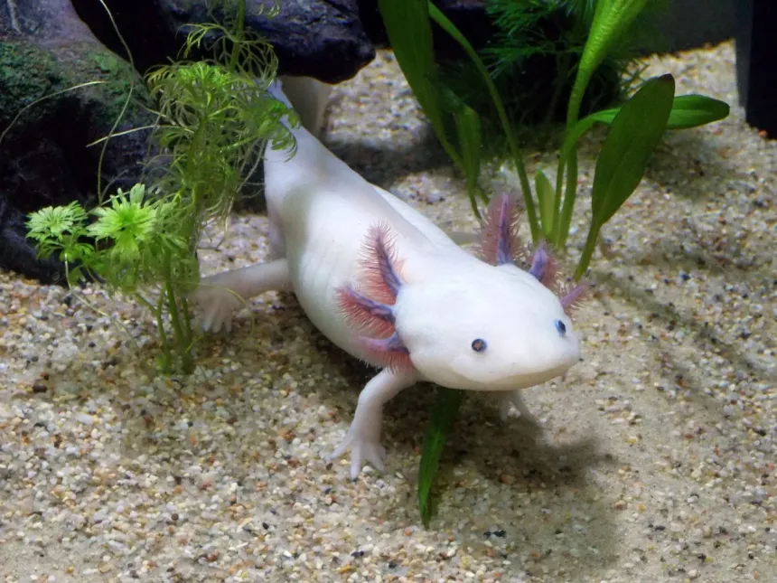
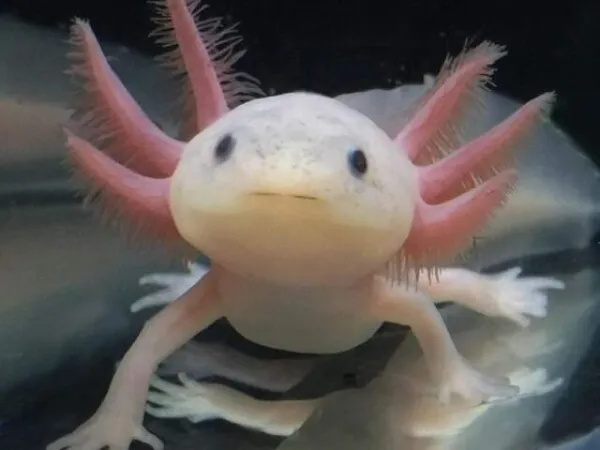

O basico que você precisa saber sobre os axolotes
O que são os Axolotes?
Os axolotes (nome científico: Ambystoma mexicanum) são uma espécie de salamandra aquática nativa do México. Eles são conhecidos por sua aparência distinta e por um fenômeno biológico raro chamado neotenia, que significa que eles mantêm características de larvas ao longo de toda a vida, ou seja, permanecem em sua forma aquática e não passam por uma metamorfose completa para a forma adulta terrestre, como ocorre com outras salamandras.
Os axolotes são famosos por suas características distintas e únicas, que incluem:
Neotenia: Os axolotes permanecem em sua fase larval durante toda a vida, o que significa que, ao contrário da maioria das salamandras, eles não passam por uma metamorfose completa para se tornar adultos terrestres. Em vez disso, mantêm características de larvas, como as brânquias externas visíveis, que são usadas para respirar debaixo d'água.
Regeneração: Uma das características mais impressionantes dos axolotes é sua habilidade de regenerar partes do corpo, incluindo membros, cauda, corda espinhal e até partes do coração e do cérebro. Esse poder de regeneração tem atraído a atenção de cientistas, pois pode fornecer insights sobre processos biológicos e regeneração em outros animais, incluindo humanos.
Aparência: Eles têm um corpo alongado e uma coloração geralmente escura (mas também podem ser albinos ou leucísticos). Seus rostos são caracterizados por grandes olhos escuros e por uma série de "pentes" brancos, que são as brânquias externas.
Originalmente, os axolotes eram encontrados em grandes lagos e canais ao redor da Cidade do México, mas hoje em dia estão ameaçados de extinção na natureza devido à poluição, destruição do habitat e introdução de espécies invasoras. Hoje, eles são principalmente mantidos em cativeiro para pesquisa científica e também como animais de estimação.
Os axolotes são carnívoros e se alimentam principalmente de pequenos invertebrados aquáticos, como vermes, pequenos peixes e crustáceos.
Curiosidades
Seu nome é uma homenagem a um deus asteca Bastante antigo, o axolote é original do México e está presente no país desde antes da chegada dos espanhóis. Tanto é, que ele faz parte da mitologia local, e seu nome é prova disso! Reza a lenda que esse animais marinhos diferentes seriam a reencarnação do antigo deus asteca Xolotl, responsável pelo fogo e pela iluminação. Descrito como um deus com esqueleto de homem e cabeça de monstro. Não à toa, sua figura lembra muito a de uma salamandra aquática com brânquias externas.
Ele também já marcou presença nas artes. Mais uma prova de que não é de hoje que os axolotes despertam a curiosidade pode ser vista no mundo das artes. Graças à inclusão desses anfíbios em murais do pintor Diego Rivera, e em textos do poeta Octavio Paz, eles se tornaram verdadeiros símbolos do México. Em 1956, o escritor argentino Julio Cortázar escreveu um conto inspirado nos axolotes.
Ele corre o risco de entrar em extinção Atualmente, o lago Xochimilco, na Cidade do México, é o único lugar do mundo onde é possível encontrar axolotes “selvagens”. E, mesmo assim, em pouca quantidade. De acordo com um censo realizado de 1998 a 2008, em 1998, o lago contava com uma população de seis mil axolotes. Esse número já havia caído para mil em 2003, e para 100 em 2008. Os pesquisadores apontam que as principais ameaças para a espécie são a poluição da água e a introdução de espécies, como carpas e tilápias, no lago Xochimilco.